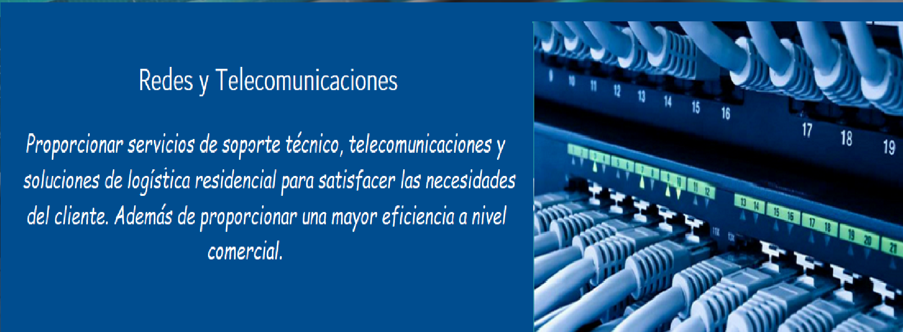

- 
-

SERVICIOS EN NETWORK TECHNOLOGY
Soporte Técnico Online
Servicios institucionales
Si buscas calidad, precio y atención.
" ¡En Network Technology esta la solución!".
Secciones

El mejor soporte técnico informático de Network Technology, con ideas nuevas y experiencia dando el mejor servicio a nuestros clientes. Contamos con soporte en software, hardware, limpieza de equipos , copia de seguridad y formateo
Nos ocupamos de resolver sus incidencias y problemas directamente On Line, rápidamente y sin esperas. Solucionaremos sus problemas sin tener que desplazarse o desmontar su ordenador
Ofrecemos un equipo de calidad, rapidez y eficacia. Con este servicio hacemos que su empresa o institución tenga un mayor rendimiento en internet, así como eficacia para que pueda haber un mejor rendimiento en cuanto al trabajo.